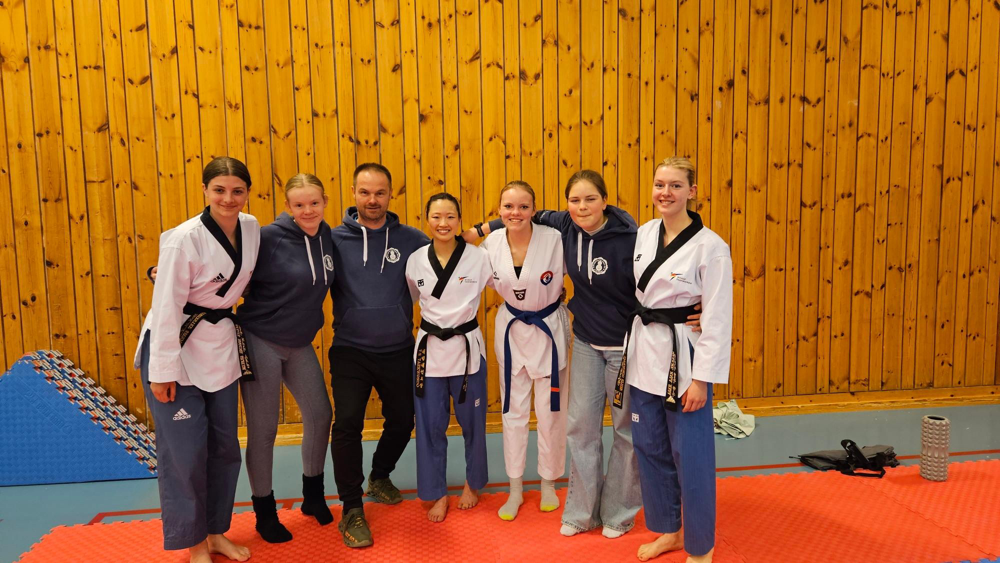
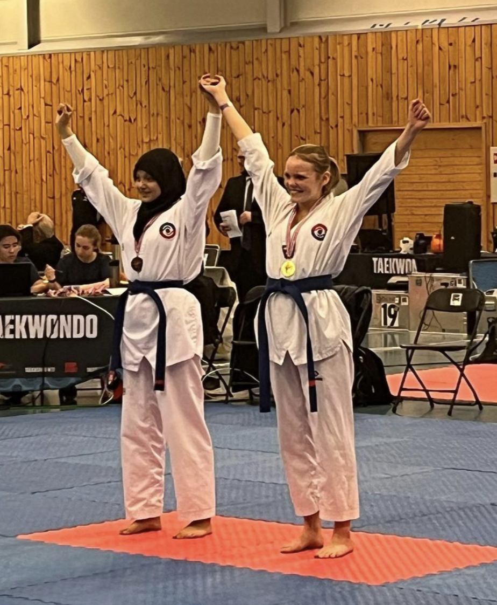
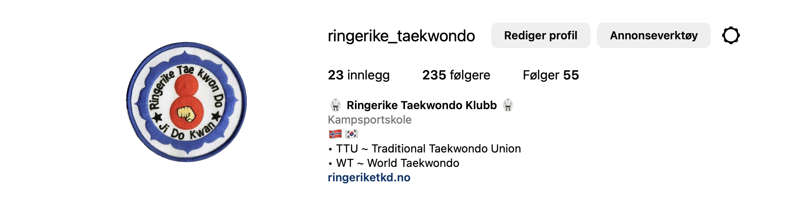

Innlegg
Første gang klubben stiller med utøvere i både poomse og kamp!

I helgen arrangerte Oslo Taekwondo Klubb Norgescup/Østlandscup 1, der det var duket for poomse-konkurranse lørdag og kamp-konkurranse søndag.
Fra klubben har det fra tidligere kun vært utøvere som har konkurrert i poomse, men denne gangen hadde vi flere medlemmer som ville prøve seg å konkurrere i kamp. Dette ble altså første konkurransen vi hadde utøvere i både poomse og kamp, noe som var veldig gøy!
I Team Ringerike, poomse-gruppen, er det Artjom Stalmakov som er coach.
Følgende konkurrerte i poomse lørdag:
- Odin Erling Lundal Larsen i klasse Barn B M 11-12 år og fikk 6. plass!
- Amanda Zabele i Kadett B F lav cup, og fikk 1. plass!
- Silje Regine Skøien i Junior A F dan, og kom til finalen! Her har vi ingen endelig plassering enda.
- Lene Kristine Røste i Junior A F dan, og kom til semifinalen! Her har vi ingen endelig plassering enda.
- Helene Mala Haga i Senior A F dan, og kom til finalen! Her har vi ingen endelig plassering enda.

I Fight Team Ringerike, kamp-gruppen, er det Øistein Røste, 2.dan, som er coach.
Følgende konkurrerte i kamp søndag:
- Ilyas Gries, og fikk gull!
- Kjell Graskopf, og fikk gull!
- Daniella Rognlid, og fikk sølv!
- Nora Henriksen, 1. dan.
- Syver Fines, 1. dan.
